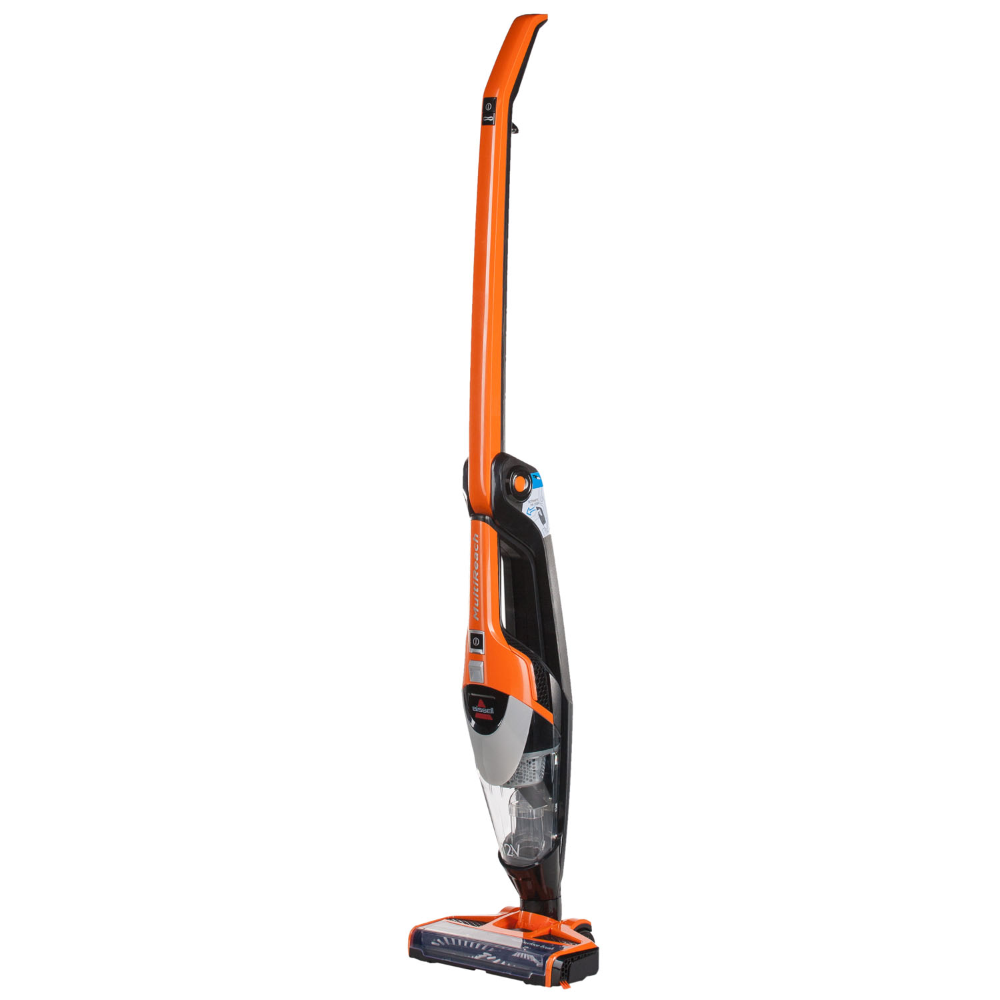
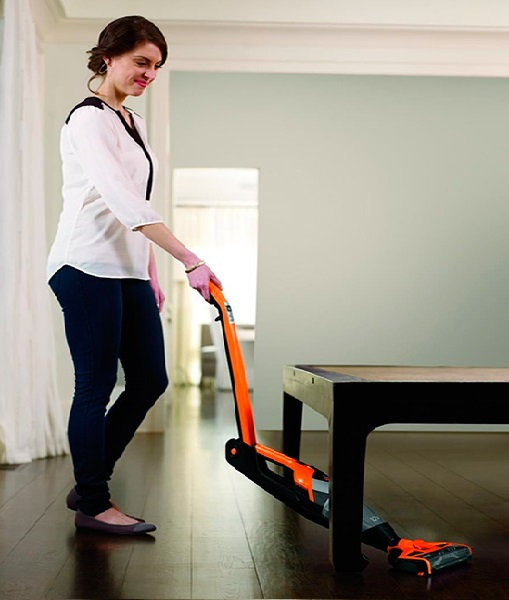
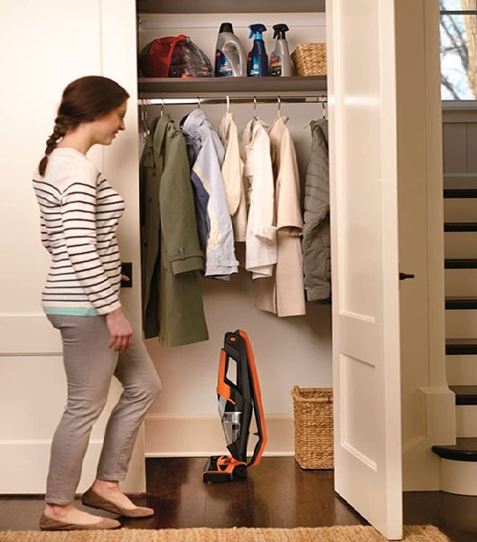
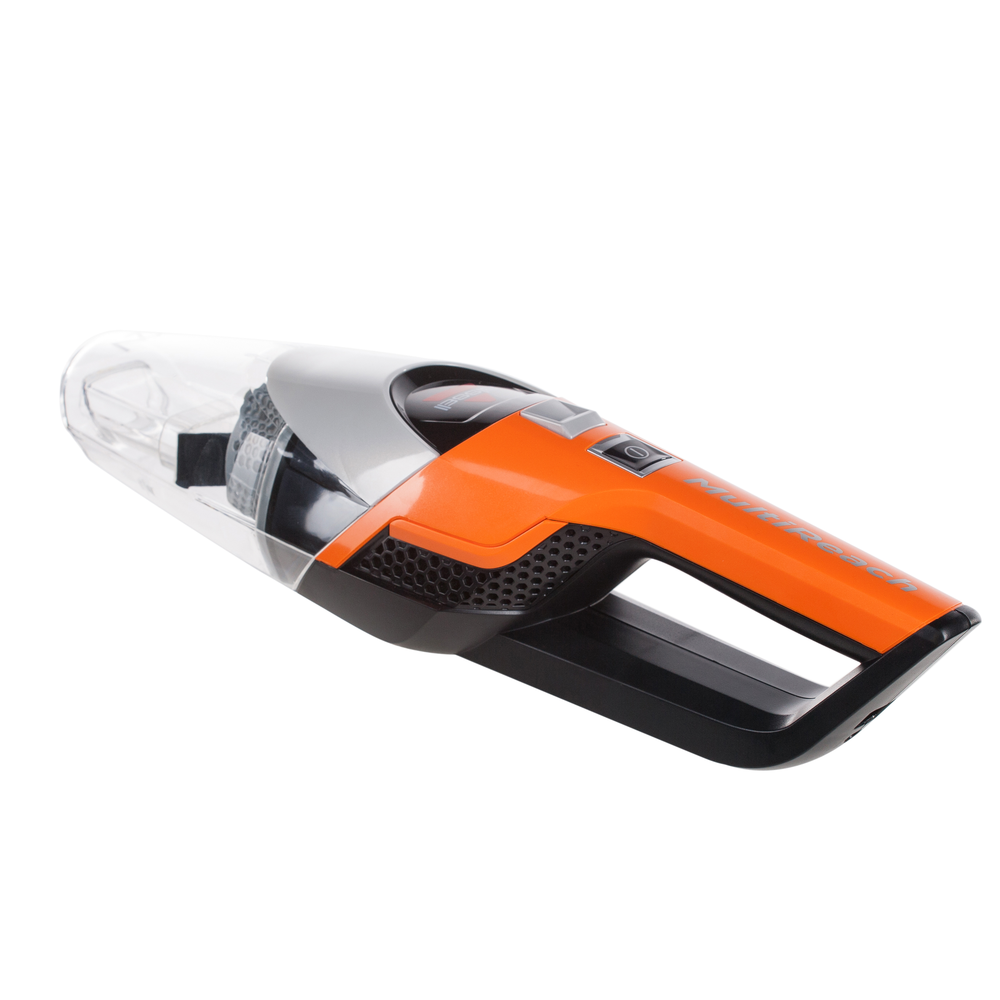
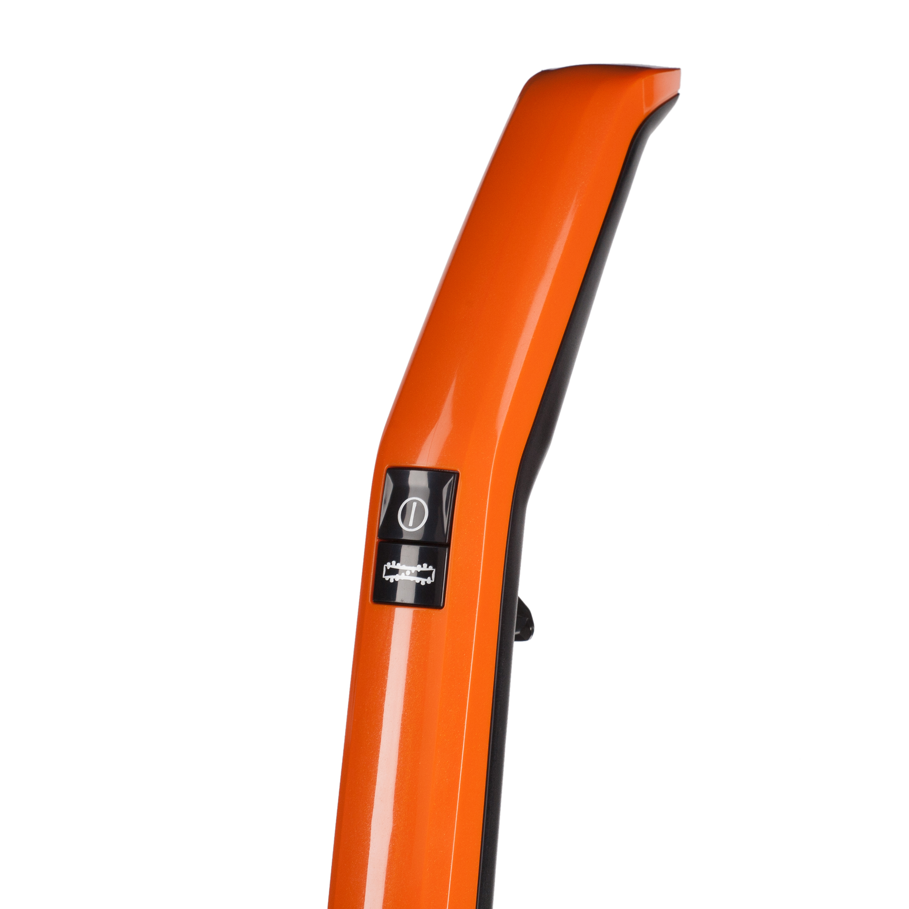
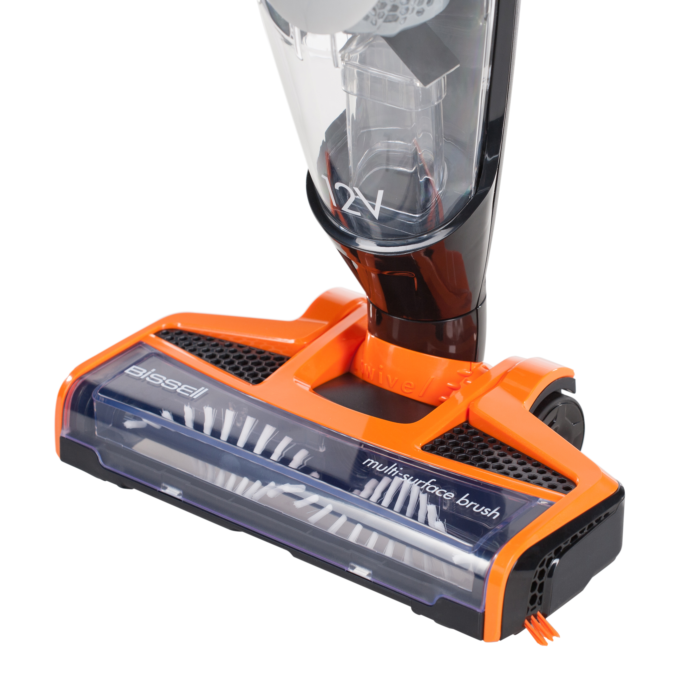
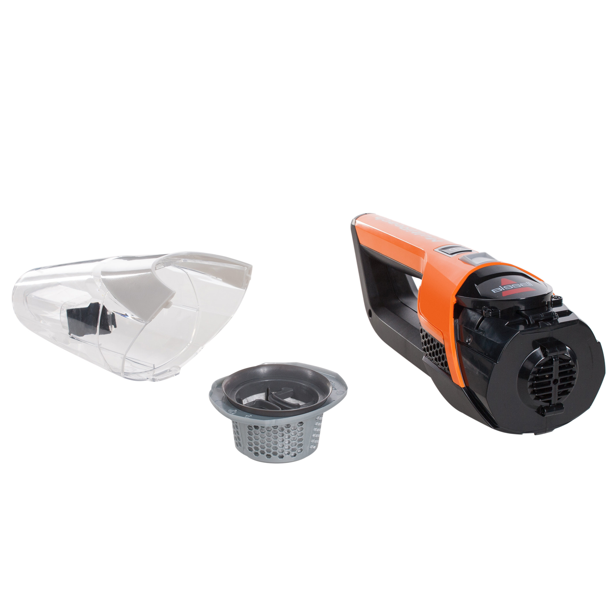
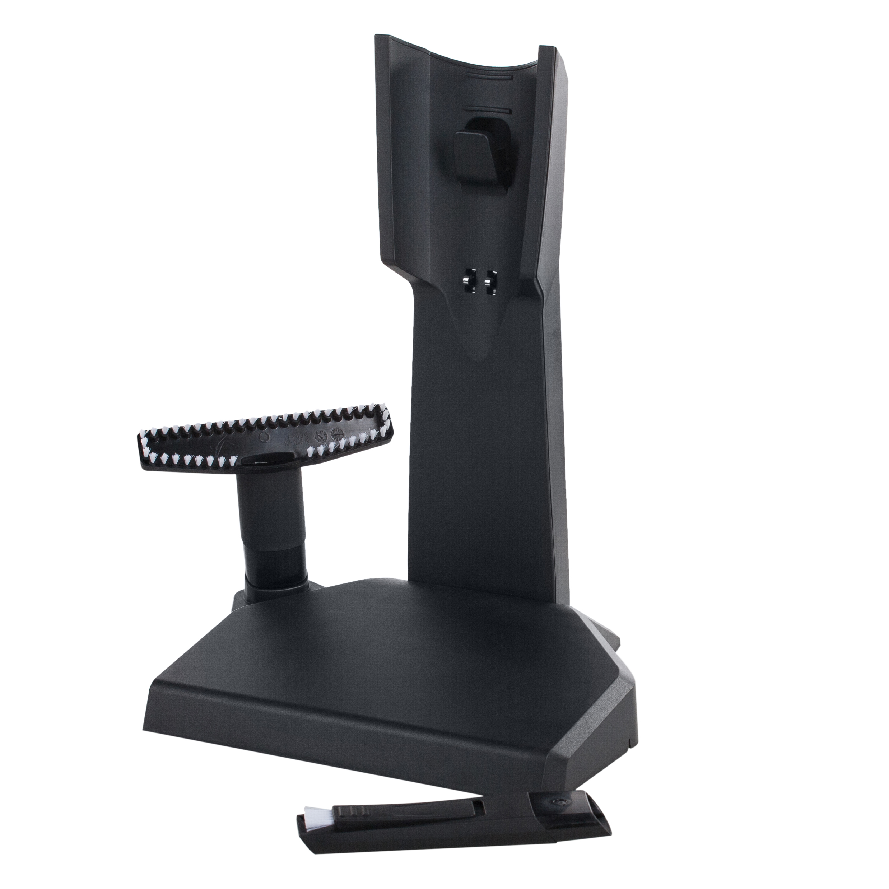
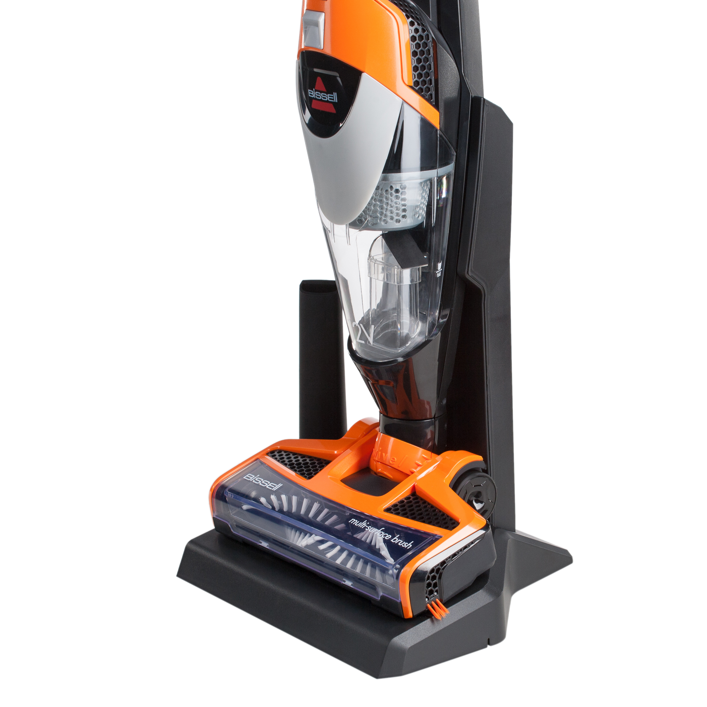
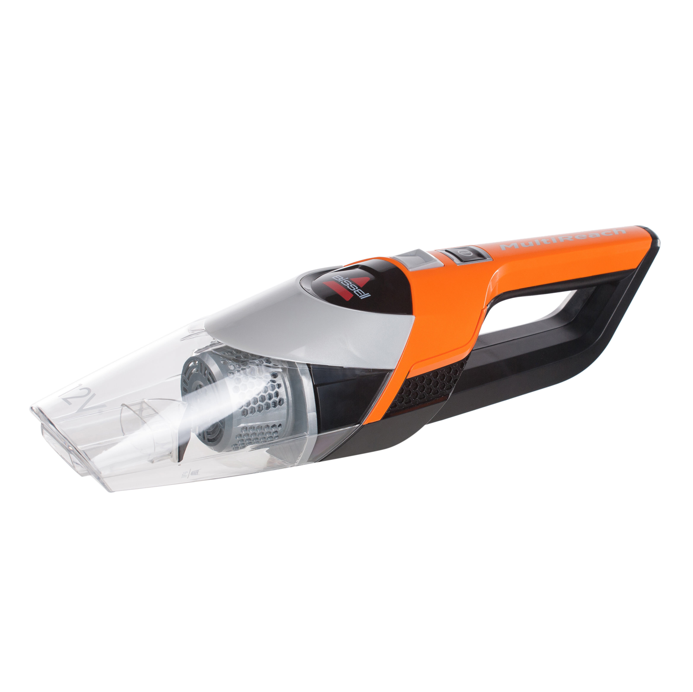

Беспроводной пылесос Bissell MultiReach 1313J 12V
Простые в использовании беспроводные вертикальные пылесосы линейки Multireach имеют компактный дизайн и обладают высокой мощностью для повседневной уборки дома.
Ручка пылесоса Bissell MultiReach 1313J складывается в 2-х направлениях. Это позволяет максимально удобно производить уборку пола под столом, стульями и другой мебелью на высоких ножках.
Сложив ручку в обратном направлении пылесос приобретает компактные габариты для удобного хранения.
Ni Mh аккумулятор 12 V обеспечивает 15 минут непрерывной работы по технологии циклонного всасывания. Время зарядки аккумулятора 8 часов. Для контроля готовности пылесоса к работе есть индикатор заряда батареи.

Отсоедините съемный модуль и оцените еще большую свободу движения при уборке грязи и мусора, где бы Вы их не обнаружили.
Электрический привод щётки с возможностью отключения вращения вала, обеспечит максимальный комфорт при уборке как ковровых, так и гладких покрытий.
Основная насадка имеет подвижное шарнирное соединение с корпусом Swivel, что гарантирует максимальную маневренность и лёгкость при управлении пылесосом.
Для простоты очистки щётки от шерсти домашних животных, волос и ниток вал легко извлекается из насадки.
Нет необходимости менять мешки, контейнер объёмом 0,4 л легко очистить высыпав мусор в ведро, для обслуживания фильтров достаточно просто промыть их под проточной водой.
Щелевая насадка с выдвижным ворсом и насадка для мягкой мебели упростят уборку поверхностей и труднодоступных мест в доме. Насадки крепятся на базе для зарядки пылесоса.
Аргументы для продажи
- Универсальный беспроводной пылесос со съёмным модулем для уборки всех типов полов и других поверхностей дома
- Ручка, складывающаяся в 2-х направлениях
- Компактное хранение
- Щётка с электрическим приводом
- Манёвренность благодаря шарнирному соединению основной насадки
- Дополнительные насадки
- База для хранения и зарядки пылесоса
- Индикация заряда батареи
Технические характеристики

Тип батареи: Никель-металлогидридный аккумулятор на 12 В
Объем контейнера для пыли: 0.4 л
Время зарядки: 8 часов
Уровень шума (дБ): 76 дБ
Время работы: до 15 минут
Мощность всасывания: 14 аВт
Вес: 2,4 кг
Страна изготовитель: КНР